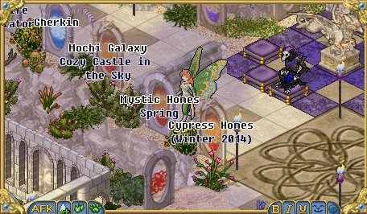
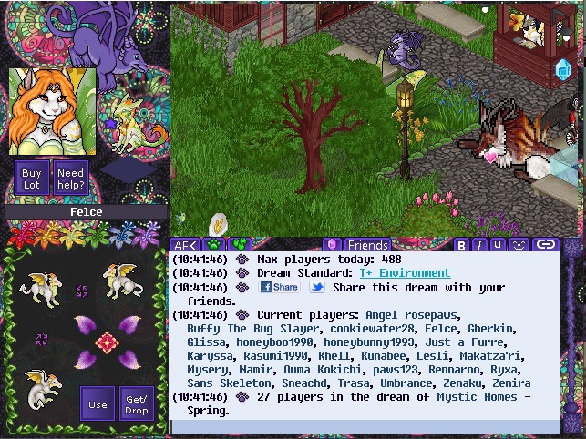

Bookmarks
This will be a list of dreams I like and would like to share with you. Big work in progress, as I'm getting the material for it.


Mystic Homes
This is a BAH dream - literally, Build A House. You can customize and decorate a house however you like. There's always a lot of people chatting just on the right from the spawn point - go there and say hello!
Directions: Navigate to Allegria Island, and press F3 until you spawn where a Vinca is on the ground. The portal is just a bit Nort-West from there. Or, open the link.